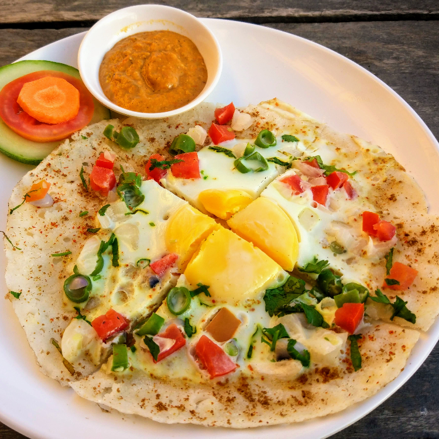

Follow for more.....
CHATAMARI
Chatamari is a traditional food among Newari people. It is also a popular food among Nepalese communities. It looks like a rice crepe or pizza. Chatamari is also widely known as Newari pizza.


INGREDIENTS & QUANTITY
| INGREDIENTS |
QUANTITY |
| rice flour |
2 cup |
| water |
3/4 cup |
| minced meat (chicken/buff) |
250 gram |
| egg |
4 |
| chopped onion |
1/2 cup |
| chopped coriander |
1/4 cup |
| chopped tomato |
1/2 cup |
| green diced chilli |
1 tbsp |
| green peas |
1 tbsp |
| garlic and ginger paste |
1 tbsp |
| cumin and coriander powder |
2 tbsp |
| turmeric powder |
1 tbsp |
| paprika powder |
1 tbsp |
| meat masala/curry powder |
1 tbsp |
| Salt |
as taste |
| Oil |
1 tbsp per chatamari |
STEPS
- Mix rice flour with water until we see a thin batter in a bowl. Keep in mind it should not be too runny. Add water slowly if needed.
- In another bowl, mix meat with coriander, garlic and ginger paste, cumin and powder, turmeric powder, paprika powder, meat masala and salt.
- Heat 1 tbsp spoon over medium-high heat in a pan.
- Once the oil is hot, pour the thin batter like a pancake with a ladle and cook for 3-5 seconds.
- Add a portion of the other mixtures on top.
- Sprinkle onion, tomato, coriander, green chilli and the egg yolk on the top.
- Then cover it with a lid on a low flame. Cook it for 3 to 4 mins. Make sure the egg is cooked to the desired consistency. Take it out from the spatula once you are happy with it.
- Chatamari is ready to serve, cut it like a pizza and enjoy.
ITEMS
- rice flour,
- water,
- minced meat,
- eggs,
- chopped onion,
- chopped coriander,
- chopped tomato,
- green diced chilli,green peas,garlic and ginger paste,cumin and coriander powder,turmeric powder,paprika powder,meat masala/curry powder,oil & Salt